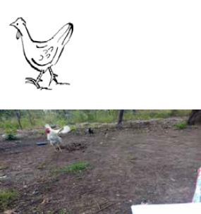
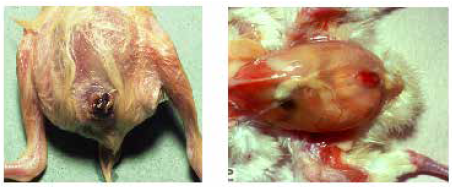

ພະຍາດ ແລະການຄຸ້ມຄອງສຸຂະພາບ
- ການເລືອກລ້ຽງໄກ່ທີ່ມີສຸຂະພາບດີ ແລະ ແຂງແຮງດີຢູ່ໃນບ້ານ ຫຼື ຕະຫຼາດແມ່ນມີຄວາມສຳຄັນ, ຖ້າຕ້ອງການຮັບປະກັນໃຫ້ມີສຸຂະພາບດີ ແລະ ຜົນຜະລິດສູງ. ດັ່ງນັ້ນທ່ານຄວນຮູ້ວິທີການຕັດສິນຄຸນນະພາບຂອງສາຍພັນທີ່ແຕກຕ່າງກັນໃນອາຍຸແລະເພດທີ່ແຕກຕ່າງກັນ, ໂດຍອີງໃສ່ລັກສະນະ, ສຽງແລະພຶດຕິກໍາຂອງເຂົາເຈົ້າຕົ້ນຕໍ.
- ໃນຕໍ່ໄປນີ້, ພວກເຮົາຈະນໍາສະເຫນີຄໍາແນະນໍາງ່າຍດາຍກ່ຽວກັບວິທີການຄັດເລືອກນົກທີ່ມີສຽງຢູ່ໃນອາຍຸທີ່ແຕກຕ່າງກັນ, ແລະແນະນໍາສິ່ງທີ່ຄວນພິຈາລະນາກ່ຽວກັບການຄັດເລືອກສາຍພັນ.
ການຮັບຮູ້ສັດປີກທີ່ເຈັບປ່ວຍແລະປ້ອງກັນພະຍາດ
- ນົກທີ່ຄຸ້ມຄອງໄດ້ດີ, ລ້ຽງດີ ແລະ ສັກຢາປ້ອງກັນພະຍາດທົ່ວໄປ ມັກຈະມີສຸຂະພາບດີ ແລະ ໃຫ້ຜົນຜະລິດດີ.
- ຢາເສບຕິດບໍ່ໄດ້ທົດແທນການຄຸ້ມຄອງທີ່ດີ ແລະບໍ່ແມ່ນການຮັບປະກັນວ່າການລະບາດຂອງພະຍາດຈະບໍ່ເກີດຂຶ້ນ.
- ເມື່ອປະຕິບັດຢາ, ທ່ານຄວນປະຕິບັດຕາມຄໍາແນະນໍາຂອງຜູ້ຜະລິດຫຼືສັດຕະວະແພດທີ່ຢູ່ໃກ້ທ່ານ. ໃນການລະບາດຂອງພະຍາດ, ຄວນຊອກຫາຄວາມຊ່ວຍເຫຼືອຈາກພະນັກງານສັດຕະວະແພດຢູ່ສະເໝີ ເນື່ອງຈາກພະຍາດສັດປີກສ່ວນໃຫຍ່ມີອາການທົ່ວໄປ ແລະ ອາດຈະຕ້ອງການວິທີການວິນິດໄສຕື່ມອີກ.
ຄຸນລັກສະນະຂອງໄກ່ທີ່ມີສຸຂະພາບດີແລະບໍ່ມີສຸຂະພາບດີ
ມັນເປັນສິ່ງ ສຳ ຄັນຫຼາຍ ສຳ ລັບຊາວກະສິກອນທີ່ຈະຮຽນຮູ້ວິທີການກວດພົບນົກທີ່ບໍ່ແຂງແຮງຫຼືເຈັບປ່ວຍ, ສະນັ້ນລາວຈຶ່ງສາມາດລິເລີ່ມການກະ ທຳ ທີ່ຖືກຕ້ອງ. ໃນຕາຕະລາງ 6 ຂ້າງລຸ່ມນີ້, ທ່ານຈະພົບເຫັນລັກສະນະຕົ້ນຕໍຂອງນົກທີ່ມີສຸຂະພາບດີແລະບໍ່ມີສຸຂະພາບດີ.
| ນົກທີ່ມີສຸຂະພາບດີ | ນົກຊະນິດທີ່ບໍ່ມີສຸຂະພາບ |
|---|
|  |  |
| ເຕືອນແລະເຝົ້າລະວັງ | ເມື່ອຍລ້າແລະບໍ່ມີຊີວິດ, ຂາດສະຕິ, ງ່ວງນອນ |
| ຕາສົດໃສແລະ comb | ຕາຈືດໆແລະ comb |
| ຍ່າງ, ແລ່ນ, ຢືນ, ແລະຂູດຢ່າງຕໍ່ເນື່ອງ | ນັ່ງຫຼືນອນ, ປີກ droopy, ຮ່າງກາຍອ່ອນເພຍ |
| ກິນແລະດື່ມຕາມປົກກະຕິ | ກິນ ແລະ ດື່ມໜ້ອຍ (ປວດຮາກ), ຂາດນ້ຳ, ອ່ອນເພຍ (ນ້ຳໜັກຫຼຸດ) |
| ວາງໄຂ່ຕາມປົກກະຕິ | ວາງໄຂ່ໜ້ອຍລົງ ຫຼືຢຸດການວາງໄຂ່ |
| ຂົນກ້ຽງແລະ neat | ມີຂົນອ່ອນໆ ແລະ ມີຂົນອ່ອນໆ |
| ຢອດເມັດອ່ອນໆ | ຂີ້ຝຸ່ນທີ່ປຽກດ້ວຍເລືອດ ຫຼືແມ່ທ້ອງ, ຖອກທ້ອງ (ອາຈົມເປັນສີຂາວ ຫຼືສີຂຽວ ເຊິ່ງອາດມີຂີ້ໝິ້ນ) ແລະ ມີຂົນເປື້ອນ ຫຼືເປັນຂີ້ຕົມຢູ່ອ້ອມໆຊ່ອງຄອດ. |
| ຫາຍໃຈງຽບໆ | ອັດຕາການຫາຍໃຈເພີ່ມຂຶ້ນ, ຫາຍໃຈຍາກ, ໄອ, ຈາມ ແລະ ຫາຍໃຈບໍ່ສະດວກ, ມີນໍ້າເມືອກອອກຈາກປາກ ແລະ ຮູດັງເປັນສີຟ້າສີມ່ວງ (ຍັງເອີ້ນວ່າ cyanosis) combs ແລະຜິວຫນັງເນື່ອງຈາກການຂາດອົກຊີເຈນໃນເລືອດ. |
| ປົກກະຕິ wattles, sinuses, ຂໍ້ຕໍ່ຂາແລະປີກ | ບວມ wattles, sinuses, ຂໍ້ຕໍ່ຂາຫຼືປີກ, footpads & bursa sternal. |
| ບໍ່ມີການສັ່ນ | ອາການໄຂ້ຕາມທີ່ສະແດງໂດຍການສັ່ນ |
| ທ່າທາງປົກກະຕິຂອງຫົວ ຫຼືຮ່າງກາຍ | ຄໍອຽງ (Torticollis), ຊັກ ແລະສັ່ນ. |
| ການເສຍຊີວິດຢ່າງກະທັນຫັນ |
ມັນເປັນສິ່ງ ສຳ ຄັນທີ່ຈະແຍກນົກທີ່ບໍ່ແຂງແຮງຫຼືເຈັບປ່ວຍອອກຈາກຝູງທີ່ມີສຸຂະພາບດີເພື່ອຮັບປະກັນການສູນເສຍຂັ້ນຕໍ່າ. ຖ້າເຈົ້າພົບເຫັນນົກທີ່ບໍ່ແຂງແຮງ ຫຼື ເຈັບປ່ວຍ, ໃຫ້ແຍກໄກ່ອອກ ແລະ ໂທຫາສັດຕະວະແພດ ຫຼື ຜູ້ຊ່ວຍສຸຂະພາບເພື່ອກວດຫາພະຍາດ ແລະ ໃຫ້ຄຳແນະນຳເພີ່ມເຕີມ. ຖ້ານົກຕາຍ, ຈູດມັນຫຼືຝັງມັນ. ທ່ານຄວນເອົານົກທີ່ຕາຍໄປອອກເພື່ອບໍ່ໃຫ້ເຊື້ອພະຍາດຕົກຄ້າງຢູ່ເທິງພື້ນດິນເພື່ອແຜ່ໄປສູ່ນົກຊະນິດອື່ນ.
ປະເພດພະຍາດ
ພະຍາດຂອງໄກ່ສາມາດແບ່ງອອກຕາມສາເຫດໄປສູ່ເຊື້ອແບັກທີເຣັຍໄວຣັສ, ກາຝາກ, ເຊື້ອເຫັດແລະຄວາມຜິດປົກກະຕິອື່ນໆ (ໂພຊະນາການ, ພິດ). ປະເພດຂອງພະຍາດຕ່າງໆມີວິທີການຄວບຄຸມຫຼືການປິ່ນປົວທີ່ແຕກຕ່າງກັນ, ດັ່ງທີ່ໄດ້ອະທິບາຍໄວ້ໃນຕາຕະລາງ.
| ປະເພດພະຍາດ | ຄວາມເປັນໄປໄດ້ສໍາລັບການຄວບຄຸມຫຼືການປິ່ນປົວ |
|---|
| ໄວຣັສ | ພະຍາດໄວຣັດບໍ່ສາມາດປິ່ນປົວໄດ້, ແຕ່ສາມາດປ້ອງກັນ ຫຼືຄວບຄຸມໄດ້ ຖ້າສັດໄດ້ຮັບການສັກຢາປ້ອງກັນພະຍາດກ່ອນທີ່ພະຍາດຈະເກີດຂຶ້ນໃນຝູງ. ຖ້າພະຍາດມີຢູ່ໃນຝູງ, ການສັກຢາປ້ອງກັນອາດຈະເພີ່ມຄວາມຮຸນແຮງຂອງພະຍາດ, ໃນທີ່ສຸດກໍ່ຂ້ານົກ. ສະນັ້ນ, ຫ້າມສັກຢາໃຫ້ນົກທີ່ເຈັບປ່ວຍ. |
| ເຊື້ອແບັກທີເຣັຍ | ພະຍາດແບັກທີເລຍຈໍານວນຫຼາຍສາມາດປິ່ນປົວໄດ້ດ້ວຍການໃຊ້ຢາຕ້ານເຊື້ອ. ມັນເປັນສິ່ງ ສຳ ຄັນທີ່ຈະວິນິດໄສພະຍາດເພື່ອເລືອກຢາຕ້ານເຊື້ອທີ່ຖືກຕ້ອງ. |
| ກາຝາກ | ແມ່ກາຝາກສ່ວນໃຫຍ່ສາມາດປິ່ນປົວໄດ້ດ້ວຍຢາພື້ນເມືອງ ແລະ ດັ້ງເດີມ (anthelmintics = dewormers). |
| ເຊື້ອເຫັດ | ພະຍາດເຊື້ອເຫັດອາດຈະຖືກປິ່ນປົວດ້ວຍຢາຕ້ານເຊື້ອ. |
| ພະຍາດທາງໂພຊະນາການ / ຄວາມຜິດປົກກະຕິ | ພະຍາດ ຫຼືຄວາມຜິດປົກກະຕິທາງໂພຊະນາການແມ່ນເກີດມາຈາກອົງປະກອບອາຫານທີ່ບໍ່ຖືກຕ້ອງ. ອີງຕາມພະຍາດ, ມັນສາມາດປ້ອງກັນໄດ້ໂດຍການປະສົມອາຫານທີ່ຖືກຕ້ອງກັບແຮ່ທາດແລະວິຕາມິນ, ຫຼືເຂົ້າໄປຫາຄວາມຫຼາກຫຼາຍຂອງອາຫານຈາກສິ່ງອ້ອມຂ້າງ, ເຊັ່ນ: ຫຍ້າສີຂຽວແລະຂີ້ງົວສົດ. |
ພະຍາດທີ່ສໍາຄັນຂອງໄກ່ທ້ອງຖິ່ນໃນອູການດາ
ພະຍາດຕິດຕໍ່ທົ່ວໄປຂອງສັດປີກທ້ອງຖິ່ນລາຍງານໃນອູການດາແມ່ນພະຍາດ Newcastle, Fowl pox, ພະຍາດ Gumboro, colibacillosis, ແລະການຕິດເຊື້ອແບັກທີເລຍອື່ນໆ. ພະຍາດອື່ນໆບາງຊະນິດຍັງບໍ່ທັນໄດ້ຮັບການລາຍງານຢູ່ໃນໄກ່ທ້ອງຖິ່ນ, ແຕ່ຍັງບໍ່ສາມາດແກ້ໄຂໄດ້ຍ້ອນຂາດແຄນການບໍລິການສັດຕະວະແພດ ແລະ ກວດພະຍາດຢູ່ເຂດຊົນນະບົດ. ບາງສ່ວນຂອງພວກມັນໄດ້ຖືກອະທິບາຍໄວ້ໃນຄູ່ມືນີ້ແຕ່ເຈົ້າຂອງໄດ້ຖືກແນະນໍາໃຫ້ປຶກສາສັດຕະວະແພດກ່ອນທີ່ຈະປິ່ນປົວ. ພະຍາດຂອງແມ່ກາຝາກປະກອບມີ coccidiosis, ແມ່ທ້ອງຕົວກົມແລະແມ່ທ້ອງຕົວແຜ່ພັນແລະແມ່ກາຝາກພາຍນອກເຊັ່ນ: ແມງແລະເຫັບ. ການຂາດສານອາຫານ, ໂດຍສະເພາະການຂາດວິຕາມິນແລະແຮ່ທາດໄດ້ຖືກລາຍງານ.
ວິທີການທົ່ວໄປຂອງການແຜ່ກະຈາຍຂອງພະຍາດ
ພະຍາດສາມາດແຜ່ລາມໄດ້ໂດຍການນໍານົກທີ່ເຈັບປ່ວຍເຂົ້າໄປໃນຝູງຫຼືໂດຍບຸກຄົນ, ເກີບໃສ່ / ເຄື່ອງນຸ່ງຫົ່ມຫຼືແມ້ກະທັ້ງຢູ່ໃນຍານພາຫະນະທີ່ໃຊ້ໃນການຂົນສົ່ງໄກ່ແລະຜະລິດຕະພັນຂອງມັນ. ຮູບຕົວຢ່າງຂອງພະຍາດແມ່ນສະແດງຢູ່ໃນຮູບຂ້າງລຸ່ມນີ້.
ການຂົນສົ່ງໄກ່ທີ່ຕິດເຊື້ອຈະແຜ່ເຊື້ອພະຍາດນິວຄາສເຊິນ ແລະ ພະຍາດຕິດຕໍ່ທີ່ແຜ່ລາມໄປສູ່ໄກ່ອື່ນໆ.
ພະຍາດຕິດຕໍ່
| ຊື່ພະຍາດ | ລາຍລະອຽດ |
|---|
| ພະຍາດ Newcastle | • ND ແມ່ນພະຍາດໄກ່ທີ່ພົບເລື້ອຍທີ່ສຸດໃນບ້ານໃນອູການດາ.
• ມີຜົນຕໍ່ທຸກກຸ່ມອາຍຸທີ່ມີອັດຕາການຕາຍສູງ (30-80%) ແລະພົບເລື້ອຍທີ່ສຸດໃນລະດູແລ້ງ ໂດຍສະເພາະເດືອນມັງກອນຫາເດືອນມີນາ.
• ພະຍາດແຜ່ລາມສ່ວນໃຫຍ່ຜ່ານທາງປາກ ແລະທາງເດີນຫາຍໃຈ ແລະ ຢອດຂອງນົກທີ່ຕິດເຊື້ອ. ວິທີການອື່ນໆຂອງການແຜ່ກະຈາຍສາມາດເປັນ |
| ສາເຫດ | ໄວຣັສ |
| ອາການແລະອາການ | • ການສູນເສຍຄວາມຢາກອາຫານ, ປີກງໍ, ຈືດໆ ແລະນົກຈະເຊື່ອງຫົວຂອງມັນໄວ້ໃຕ້ປີກ.
• ມີສີເຫຼືອງອອກຂຽວ ແລະ ບາງຄັ້ງຖອກທ້ອງເປັນເລືອດ
• ອາການທາງເດີນຫາຍໃຈເຊັ່ນ: ຫາຍໃຈບໍ່ສະດວກ, ຈາມ, ໄອ ແລະ ຫາຍໃຈຍາກ.
• ໄຫຼອອກຈາກຮູດັງ ແລະ ຕາ
• ກ້າມເນື້ອຜິດປົກກະຕິເຊັ່ນ: ຄໍບິດ ຮູບທີ 43, ແຂງກະດ້າງ ແລະ ການຂາບໄຫວ້.
• ອາການປະສາດສ່ວນກາງເຊັ່ນ: ສັ່ນ, ການເຄື່ອນໄຫວບັງຄັບ, ແລະເສຍຊີວິດ.
• ຢອດການວາງໄຂ່. ໄຂ່ມີຄຸນນະພາບຕ່ໍາແລະອາດຈະມີເປືອກອ່ອນ, roughened, ຫຼືພິການ. ການຜະລິດສືບຕໍ່ຊ້າ, ຫຼືບໍ່ແມ່ນ, ຂຶ້ນກັບຂັ້ນຕອນຂອງການວາງໃນເວລາທີ່ຕິດເຊື້ອ
• ອັດຕາການຕາຍສູງ |
| ການປ້ອງກັນ | • ການສັກຢາວັກຊີນເປັນວິທີດຽວທີ່ຈະຄວບຄຸມ ND. ໂຄງການການສັກຢາປ້ອງກັນຄວນໄດ້ຮັບການຮັບຮອງເອົາແລະປະຕິບັດຕາມຢ່າງເຂັ້ມງວດ
•ຫຼີກເວັ້ນການແນະນໍານົກໃຫມ່ເຂົ້າໄປໃນຫຼັກຊັບຂອງທ່ານ. ຢ່າງໃດກໍຕາມ, ຖ້ານົກຊະນິດໃຫມ່ຖືກນໍາສະເຫນີ, ຄວນໃຊ້ເວລາກັກກັນສອງອາທິດ.
• ຖ້ານົກຊະນິດໃດໄດ້ຮັບຜົນກະທົບ, ໃຫ້ກໍາຈັດຝູງສັດທັງໝົດອອກ. ຖ້າໄກ່ສອງສາມໂຕຢູ່ລອດ, ພວກມັນຈະກາຍເປັນຜູ້ຂົນສົ່ງໃນບາງເວລາ, ມີແນວໂນ້ມທີ່ຈະຕິດເຊື້ອນົກຊະນິດໃຫມ່.
• ຄວນມີມາດຕະຖານສຸຂາພິບານສູງ ແລະ ຫຼີກລ່ຽງການເກີດພະຍາດໃນຝູງ.
• ຫ້າມບໍ່ໃຫ້ໄກ່ ແລະ ໄກ່ປ່າຢູ່ຮ່ວມກັນ ເພາະເປັນສັດທີ່ມີສຸຂະພາບດີ ແລະ ສາມາດແຜ່ເຊື້ອພະຍາດໄປສູ່ສັດປີກໄດ້.
• ພະຍາດ Newcastle ເປັນພະຍາດທີ່ລາຍງານໄດ້. ທຸກໆກໍລະນີທີ່ສົງໃສວ່າມີການລະບາດຂອງພະຍາດຕ້ອງລາຍງານໃຫ້ເຈົ້າໜ້າທີ່ສາທາລະນະສຸກທັນທີ. |
| ການປິ່ນປົວ | • ບໍ່ມີການປິ່ນປົວເພາະມັນເປັນພະຍາດໄວຣັສ |
| ຊື່ພະຍາດ | ລາຍລະອຽດ |
|---|
| ໄຂ້ຫວັດໝູ | •ແຜ່ຂະຫຍາຍໂດຍການຕິດຕໍ່.
• ນົກທຸກອາຍຸສາມາດໄດ້ຮັບຜົນກະທົບໄດ້ ແຕ່ມັນເປັນອັນຕະລາຍຫຼາຍຕໍ່ລູກໄກ່ ແລະນົກທີ່ວາງໄວ້ |
| ສາເຫດ | ໄວຣັສ |
| ອາການແລະອາການ | • ເປັນຕຸ່ມທີ່ຄ້າຍຄືຕຸ່ມ/ມີເກັດເປັນຕຸ່ມຢູ່ຕາມຫວີ, ຫວີ ແລະອ້ອມຕາ/ໂຄນຂອງປາຍປາກ. ເປືອກຕາສາມາດປິດໄດ້ໂດຍ nodules ເຫຼົ່ານີ້ (ຮູບແບບຜິວຫນັງ). ຮູບແບບອື່ນໂຈມຕີປາກຫຼືເສັ້ນທາງຫາຍໃຈເທິງ, ບ່ອນທີ່ມີເມັດສີຂາວຢູ່ໃນປາກ, ລີ້ນ, ຄໍ, ຮູດັງ, ແລະຕາ. ອັນນີ້ເຮັດໃຫ້ເກີດການເສຍຊີວິດຫຼາຍຂຶ້ນ ເນື່ອງຈາກນົກບໍ່ສາມາດກິນ ແລະ/ຫຼືດື່ມໄດ້.

•ຫຼຸດລົງການຜະລິດໄຂ່.
• ອັດຕາການຕາຍຂອງພະຍາດໄຂ້ຫວັດສັດປີກໂດຍທົ່ວໄປແມ່ນຕໍ່າ ແລະການເສຍຊີວິດສ່ວນຫຼາຍແມ່ນຍ້ອນ |
| ຫາຍໃຈຍາກ ແລະຄວາມອຶດຫິວ. | |
| ການປ້ອງກັນ | • ການສັກຢາປ້ອງກັນແມ່ນແນະນໍາ ແລະມີປະສິດທິພາບສູງ. ປົກກະຕິແລ້ວແມ່ນເຮັດເມື່ອອາຍຸ 4-8 ອາທິດ. ເບິ່ງບົດວັກຊີນສຳລັບຄຳອະທິບາຍລະອຽດກ່ຽວກັບວິທີການສັກຢາກັນພະຍາດໄຂ້ຫວັດສັດປີກ. |
| ການປິ່ນປົວ | • ບໍ່ມີການປິ່ນປົວສະເພາະສຳລັບພະຍາດໄຂ້ຫວັດສັດປີກ ເນື່ອງຈາກມັນເປັນພະຍາດໄວຣັດ.
• ແນວໃດກໍ່ຕາມ, ການກໍາຈັດຮອຍດ່າງເທິງຫົວດ້ວຍຂົນຝ້າຍທີ່ຊຸ່ມດ້ວຍໄອໂອດິນ ແລະໃຫ້ Oxytetracycline 25% ໃນນ້ໍາດື່ມເປັນເວລາ 5 ມື້ປັບປຸງການຢູ່ລອດ. |
| ຊື່ພະຍາດ | ລາຍລະອຽດ |
|---|
| ພະຍາດ Gumboro (ພະຍາດ Bursal ຕິດເຊື້ອ, IBD) | • ມັກຈະເກີດຂຶ້ນເປັນຝູງໃຫຍ່ທີ່ເກັບຮັກສາໄວ້ໃນບ່ອນກັກຂັງ. ບໍ່ມີທົ່ວໄປໃນລະບົບບ້ານຂະຫນາດນ້ອຍ.
• ແນວໃດກໍ່ຕາມ, ພະຍາດນີ້ມີຄວາມສໍາຄັນເພີ່ມຂຶ້ນຢູ່ໃນລູກໄກ່ຂອງສັດປີກທ້ອງຖິ່ນ
• ໂດຍທົ່ວໄປແລ້ວ, ມັນເກີດຂຶ້ນໃນລູກໄກ່ອາຍຸລະຫວ່າງ 3 – 6 ອາທິດ.
•ສ່ວນໃຫຍ່ແມ່ນຜົນກະທົບຕໍ່ຕ່ອມທີ່ເອີ້ນວ່າ bursa ຂອງ Fabricius ເຊິ່ງເປັນຫນຶ່ງໃນອະໄວຍະວະພູມຕ້ານທານທີ່ສໍາຄັນທີ່ສຸດທີ່ຕັ້ງຢູ່ອ້ອມຮອບ cloaca.
• ເຊື້ອພະຍາດສາມາດແຜ່ລາມໄດ້ໂດຍການສຳຜັດກັບວັດສະດຸທີ່ປົນເປື້ອນ ແລະ ຜ່ານແມ່ກາຝາກຕ່າງໆ ທີ່ເອົາມາ ແລະ ຕິດເຊື້ອໄວຣັດ. |
| ສາເຫດ | ໄວຣັສ |
| ອາການແລະອາການ | • ອາການຈະສັງເກດເຫັນຫຼັງຈາກອາຍຸໄດ້ 3 ອາທິດເທົ່ານັ້ນ. ອັດຕາການເປັນພະຍາດຢ່າງກະທັນຫັນ ແລະສູງ. ຈໍານວນນົກທີ່ໄດ້ຮັບຜົນກະທົບແມ່ນສູງຫຼາຍໃນຝູງ
• ໂດຍທົ່ວໄປແລ້ວຈຳນວນຜູ້ເສຍຊີວິດແມ່ນຕໍ່າ ເຖິງວ່າມັນຈະມີຫຼາຍ (ປະມານ 90%) ຖ້າການລ້ຽງສັດບໍ່ດີ. ການຕາຍຢູ່ໃນຝູງປົກກະຕິແລ້ວແມ່ນຈຸດສູງສຸດແລະຟື້ນຕົວພາຍໃນຫນຶ່ງອາທິດຂອງການເລີ່ມຕົ້ນ.
• ຖອກທ້ອງທີ່ອາດຈະເປັນສີຂາວແຕ່ບາງຄັ້ງຄາວ,
• ມີເລືອດໄຫຼອອກ ແລະ ເມື່ອຍ
• ຂັບຖ່າຍ.
• ຊຶມເສົ້າ, ຂາດຄວາມຢາກອາຫານ, ມີຂົນອ່ອນໆ,
• ແລະມີລັກສະນະເປັນຕາຢ້ານ.
• ການເຈາະຮູລົມແມ່ນເປັນເລື່ອງທຳມະດາ.
• ການເສຍຊີວິດຫຼັງການຕາຍແມ່ນຕ້ອງການເພື່ອສ້າງຕັ້ງການວິນິດໄສຕົວຈິງຂອງພະຍາດໂດຍສັດຕະວະແພດ. |
| ການປ້ອງກັນ | ການສັກຢາປ້ອງກັນ |
| ການປິ່ນປົວ | • ບໍ່ມີການປິ່ນປົວສະເພາະເພາະມັນເປັນພະຍາດໄວຣັສ.
• ແນວໃດກໍ່ຕາມ, ການລ້ຽງທີ່ດີເຊັ່ນ: ອຸນຫະພູມທີ່ພຽງພໍ ແລະຢາຕ້ານເຊື້ອໃນຂອບເຂດກວ້າງອາດຈະຫຼຸດຜ່ອນຄວາມຮຸນແຮງຂອງພະຍາດ. |
| ຊື່ພະຍາດ | ລາຍລະອຽດ |
|---|
| ຫຼອດປອດອັກເສບຕິດເຊື້ອ (IB) | • ແຜ່ລາມຢ່າງໄວວາ ແລະສາມາດສົ່ງຜົນກະທົບເຖິງ 100% ຂອງນົກໃນຝູງທີ່ມີຄວາມຮຸນແຮງແຕກຕ່າງກັນ. |
| ສາເຫດ | ໄວຣັສ |
| ອາການແລະອາການ | • ໄອ, ໄອ ແລະ ຈາມ
• ມີນໍ້າໄຫຼອອກຈາກດັງ ແລະ ຕາ.
• ຢູ່ໃນລູກໄກ່: ອ່ອນເພຍ, ຊຶມເສົ້າ, ແລະການຕົບຕົວຢູ່ໃກ້ກັບແຫຼ່ງຄວາມຮ້ອນ. ອັດຕາການຕາຍຂອງລູກໄກ່ມັກຈະມີໜ້ອຍ ເວັ້ນເສຍແຕ່ວ່າພະຍາດຈະສັບສົນໂດຍຕົວແທນການຕິດເຊື້ອອື່ນເຊັ່ນ: ເຊື້ອແບັກທີເຣັຍ. ໃນການວາງນົກ, ການຜະລິດໄຂ່ຫຼຸດລົງ (ເຖິງ 50%) ແລະໄຂ່ມີຮູບຮ່າງ ragged. ຜົນກະທົບຂອງການຜະລິດສາມາດໃຊ້ເວລາ 6-8 ອາທິດຫຼືດົນກວ່ານັ້ນ.
 |
| ການປ້ອງກັນ | • ການສັກຢາປ້ອງກັນ. ວັກຊີນແມ່ນແຍກຕ່າງຫາກຫຼືປະສົມປະສານກັບວ່າສໍາລັບພະຍາດ Newcastle. |
| ການປິ່ນປົວ | • ບໍ່ມີການປິ່ນປົວສະເພາະ, ເນື່ອງຈາກວ່າມັນເປັນພະຍາດໄວຣັສ.
• ຢາຕ້ານເຊື້ອທີ່ມີຂະໜາດກວ້າງສາມາດຊ່ວຍໄດ້ ເພາະວ່າພະຍາດມັກຈະສັບສົນໂດຍການຕິດເຊື້ອແບັກທີເລຍ.
• ສໍາລັບລູກໄກ່ທີ່ເປັນພະຍາດ, ອາດຈະຊ່ວຍເພີ່ມອຸນຫະພູມຫ້ອງ, ຊຸກຍູ້ໃຫ້ນົກກິນ ແລະແກ້ໄຂຂໍ້ບົກພ່ອງໃນການຈັດການ. |
| ຊື່ພະຍາດ | ລາຍລະອຽດ |
|---|
| Colibacillosis (ເຈັບເສັ້ນປະສາດ) | • ພະຍາດຂອງສຸຂະອະນາໄມບໍ່ດີ.
• ແຜ່ລາມຜ່ານອາຈົມ. ນົກທີ່ຕິດເຊື້ອໂດຍການຕິດຕໍ່ໂດຍກົງກັບເຫຍື້ອເປື້ອນຫຼືເປືອກໄຂ່ທີ່ປົນເປື້ອນ. ບໍ່ໄດ້ຕິດຕໍ່ຈາກນົກໄປຫານົກ. |
| ສາເຫດ | • ພະຍາດສິ່ງແວດລ້ອມທີ່ເກີດຈາກເຊື້ອແບັກທີເຣັຍທົ່ວໄປ, ມີຢູ່ໃນລໍາໄສ້ຂອງນົກ ແລະສັດລ້ຽງລູກດ້ວຍນົມ |
| ອາການແລະອາການ | • ພົບທົ່ວໄປໃນບັນດາລູກໄກ່ທີ່ຫາກໍ່ອອກໃໝ່: ການຕິດເຊື້ອໃນກະເພາະອາຫານ.
• ອາການໃນນົກທີ່ສູງອາຍຸ
» ຫາຍໃຈຍາກ
» ການຕິດເຊື້ອໃນອະໄວຍະວະຂອງໄຂ່ດ້ວຍການຢຸດການຜະລິດໄຂ່
» ບວມ ແລະ ບວມ
» ຖອກທ້ອງໂດຍມີຂົນຂົນຢູ່ອ້ອມທໍ່ລະບາຍອາກາດ.
 |
| ການປ້ອງກັນ | • ໂຄງການສຸຂາພິບານຢ່າງແຂງແຮງໃນເຮືອນສັດປີກ ແລະ ຄວບຄຸມຂີ້ຝຸ່ນໃນເຮືອນສັດປີກ.
•ຫຼີກເວັ້ນຄວາມກົດດັນຈາກພະຍາດອື່ນໆແລະແມ່ກາຝາກ.
• ເຮັດຄວາມສະອາດ ແລະຂ້າເຊື້ອເຄື່ອງໃຫ້ນໍ້າ ແລະເຄື່ອງປ້ອນ ແລະຫຼີກເວັ້ນການປົນເປື້ອນຂອງອາຈົມ. |
| ການປິ່ນປົວ | • ການປິ່ນປົວລູກໄກ່ທີ່ເຈັບປ່ວຍອາດເປັນໄປໄດ້ດ້ວຍຢາຕ້ານເຊື້ອ (tetracyclines, enrofloxacin, neomycin, sulfa ຢາ ແລະ ອື່ນໆ).
• ການປິ່ນປົວເປັນປົກກະຕິໄດ້ຜົນຖ້າໃຫ້ໄວ. |
| ຫົວຂໍ້ | ລາຍລະອຽດ |
|---|
| ປອດບວມໃນບຣອດເດີ (Aspergillosis) | • ໄດ້ມາໂດຍການຫາຍໃຈເຂົ້າ (ສູດດົມ) ເຊື້ອເຫັດທີ່ມາຈາກອາຫານ ຫຼືຂີ້ເຫຍື້ອ.
• ບໍ່ຕິດຕໍ່ຈາກນົກໄປຫານົກ. |
| ສາເຫດ | ເຊື້ອເຫັດ |
| ອາການແລະອາການ | ພະຍາດດັ່ງກ່າວໂຈມຕີປອດ, ຖົງລົມ ແລະຕັບ. ອາການຕ່າງໆປະກອບມີການຫາຍໃຈຍາກ, ຫາຍໃຈບໍ່ອອກ, ຕາບອດແລະພຶດຕິກໍາທີ່ຜິດປົກກະຕິໃນເວລາທີ່ສະຫມອງມີສ່ວນຮ່ວມ. |
| ການປ້ອງກັນ | • ລະບາຍອາກາດໄດ້ດີໃນເຮືອນທີ່ນົກນອນ ຫຼື ລ້ຽງ.
• ຂີ້ເຫຍື່ອຄວນແຫ້ງ ແລະ ອ່ອນນຸ້ມສະເໝີ. ຂີ້ເຫຍື່ອທີ່ເຮັດດ້ວຍເຄ້ກຄວນຖືກໂຍກຍ້າຍອອກເພື່ອປ້ອງກັນການເຕີບໃຫຍ່ຂອງເຊື້ອເຫັດ.
• ຄວນໃຫ້ອາຫານສົດ. ຢ່າໃຫ້ນົກເປັນອາຫານ.
• ໃຊ້ທອງແດງຊູນເຟດຕາມຄໍາແນະນໍາຜູ້ຜະລິດເພື່ອກໍາຈັດຂີ້ເຫຍື້ອ. |
ໝາຍເຫດ:
- ພະຍາດຕິດຕໍ່ສ່ວນຫຼາຍແມ່ນມີອາການທົ່ວໄປ ແລະດັ່ງນັ້ນການກວດກາຫຼັງການຕາຍແມ່ນມີປະໂຫຍດຫຼາຍໃນການບົ່ງມະຕິພະຍາດ. ຊອກຫາການຊ່ວຍເຫຼືອຂອງສັດຕະວະແພດທີ່ຢູ່ໃກ້ທ່ານ.
- ນົກບໍ່ຄວນຖືກຂ້າກ່ອນໄລຍະເວລາການຖອນຢາເພື່ອບໍລິໂພກຂອງມະນຸດ. ປະຕິບັດຕາມຄໍາແນະນໍາຂອງຜູ້ຜະລິດກ່ຽວກັບໄລຍະເວລາການຖອນແລະປະລິມານຢາສໍາລັບເງື່ອນໄຂທີ່ທ່ານກໍາລັງປິ່ນປົວ.
- ຢາເສບຕິດສ່ວນໃຫຍ່ມາໃນຊື່ການຄ້າ, ດັ່ງນັ້ນທ່ານຄວນຊອກຫາຈາກຜູ້ຂາຍຢາຊື່ຢາທີ່ແທ້ຈິງສໍາລັບການປິ່ນປົວທີ່ຖືກຕ້ອງ.